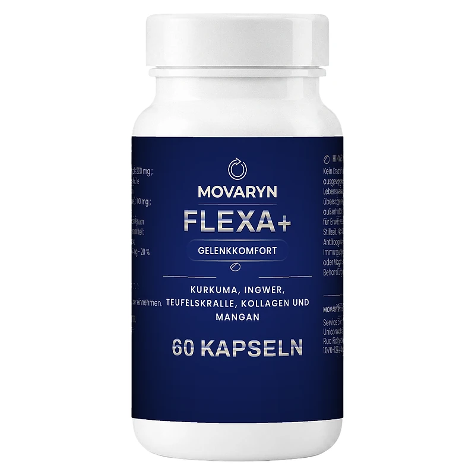
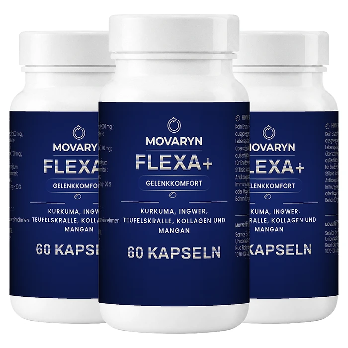

Was ist Movaryn und wie wirkt es?
Movaryn FLEXA+ ist ein Nahrungsergänzungsmittel in Kapselform für den Gelenkkomfort. Auf dem Etikett steht „Gelenkkomfort“ und die Formel aus „Kurkuma, Ingwer, Teufelskralle, Kollagen und Mangan“. Eine Flasche enthält 60 Kapseln, was bei zwei Kapseln täglich für einen Monat reicht.
Laut der offiziellen Website richtet sich Movaryn an Menschen, die aktiv bleiben möchten: wandern, Rad fahren, im Garten arbeiten oder mit den Enkeln mithalten. Die Website beschreibt typische Situationen wie das Knie auf der Treppe, die Hüfte nach der Gartenarbeit oder steife Finger am Morgen.
Die Formel kombiniert fünf Wirkstoffe. Kurkuma trägt laut Hersteller zur Erhaltung gesunder Knochen und Gelenke bei. Ingwer und Teufelskralle werden als traditionelle Pflanzen des Gelenkkomforts beschrieben. Dazu kommen ein Hydrolysat aus Meereskollagen und Mangan, das zur normalen Bildung von Bindegewebe beiträgt.
Nach Angaben des Herstellers wird jede Charge in Europa nach den Regeln der Guten Herstellungspraxis (GMP) produziert und vor dem Versand kontrolliert. Die Kapselhülle ist pflanzlichen Ursprungs, und die Formel enthält keine Aufputschmittel. Hinter der Marke steht die Taikine SA mit Sitz in Préverenges in der Schweiz, die im selben Shop auch ein zweites Produkt namens CALCIO DAILY anbietet. Laut Website haben sich bereits über 5.000 Kundinnen und Kunden für Movaryn entschieden.
Die Website empfiehlt eine Kur von drei Monaten mit anschließender Pause. Laut den häufig gestellten Fragen berichten Kundinnen und Kunden meist nach drei bis vier Wochen regelmäßiger Einnahme von einem Unterschied beim Aufwachen und auf der Treppe.
Wie bei jedem Nahrungsergänzungsmittel gilt: Movaryn kann eine gesunde Lebensweise unterstützen, ersetzt aber keine ärztliche Untersuchung. Wer starke oder anhaltende Gelenkschmerzen, Schwellungen oder Rötungen hat, sollte die Ursache zuerst ärztlich abklären lassen. Ergebnisse können variieren.
Movaryn Inhaltsstoffe
Laut der offiziellen Website enthält die empfohlene Tagesdosis von zwei Kapseln:
Kurkuma-Wurzelpulver (200 mg): Curcuma longa, laut Hersteller trägt Kurkuma zur Erhaltung gesunder Knochen und Gelenke bei.
Ingwer-Rhizompulver (100 mg): Zingiber officinale, eine traditionelle Wurzel aus der Küche.
Hydrolysat aus Meereskollagen (80 mg): laut Website eine gut verwertbare Form von Kollagen.
Teufelskrallenwurzel-Extrakt (50 mg): Harpagophytum procumbens und H. zeyheri aus dem südlichen Afrika.
Mangan (0,4 mg, 20 % des Nährstoffbezugswerts): als Mangangluconat; Mangan trägt zur normalen Bildung von Bindegewebe bei.
Weitere Bestandteile sind eine Kapselhülle aus Hydroxypropylmethylcellulose, Maltodextrin und Magnesiumsalze von Speisefettsäuren als Trennmittel.
Zur Herkunft der Pflanzen schreibt die Website, dass Kurkuma seit Jahrhunderten verwendet wird, Ingwer eine in allen Küchen bekannte Wurzel ist und die Teufelskralle, benannt nach den hakenförmigen Früchten, aus dem südlichen Afrika stammt. Die einzige gesundheitsbezogene Angabe, die der Hersteller direkt macht, betrifft Kurkuma sowie Mangan; die übrigen Bestandteile werden als traditionelle Begleiter beschrieben.
Positiv ist, dass jede Menge offen angegeben wird. Die Dosierungen von Kurkuma und Teufelskralle sind eher moderat, die Formel setzt auf die Kombination der fünf Wirkstoffe.
Movaryn Nebenwirkungen
Laut den häufig gestellten Fragen auf der offiziellen Website besteht Movaryn aus Zutaten natürlichen Ursprungs und wird bei den empfohlenen Dosierungen in der Regel gut vertragen. Bei einer Reaktion soll die Einnahme beendet und eine medizinische Fachperson konsultiert werden.
Die Anwendungshinweise nennen wichtige Einschränkungen. Das Produkt ist nur für Erwachsene bestimmt und soll während Schwangerschaft und Stillzeit nicht eingenommen werden. Von einer Einnahme wird außerdem abgeraten bei einer Behandlung mit Antikoagulanzien (Blutverdünnern), Krebsmedikamenten oder Immunsuppressiva. Auch von einer längeren Anwendung rät der Hersteller ab, deshalb die Empfehlung einer Kur mit Pause.
Kurkuma, Ingwer und Teufelskralle können bei empfindlichen Personen den Magen reizen. Eine Kundin berichtet auf der Website, dass ihr Magen in den ersten Tagen empfindlich war, solange sie die Kapseln nüchtern genommen hat, und dass die Beschwerden mit der Einnahme zum Frühstück verschwanden. Nehmen Sie die Kapseln deshalb immer zu einer Mahlzeit, wie es auch auf der Packung steht.
Wer Magen- oder Gallenbeschwerden hat oder regelmäßig Medikamente einnimmt, sollte vor dem Start den Rat einer Ärztin, eines Arztes oder der Apotheke einholen, wie es auch die Website empfiehlt. Bei allergischen Reaktionen oder anderen ungewöhnlichen Beschwerden setzen Sie das Produkt sofort ab.
Movaryn Dosierung
Laut der offiziellen Website nehmen Sie zwei Kapseln pro Tag mit einem Glas Wasser ein, vorzugsweise zu einer Mahlzeit. Am einfachsten ist laut Hersteller eine Kapsel zum Frühstück und eine zum Abendessen. Mehr als zwei Kapseln pro Tag sollen nicht eingenommen werden.
Eine Flasche reicht für einen Monat. Der Hersteller empfiehlt eine Kur von drei Monaten und danach eine Pause. Wer Schwierigkeiten beim Schlucken hat, kann die Kapsel laut Website öffnen und den Inhalt unter einen Joghurt oder ein Kompott mischen.
Die Website gibt einige praktische Tipps: die Kapseln jeden Tag zur gleichen Zeit nehmen, etwa zum Morgenkaffee, sich jeden Tag ein wenig bewegen, gut trinken, ausgewogen essen und sich vor körperlicher Anstrengung aufwärmen. Gelenke mögen laut Hersteller sanfte, regelmäßige Bewegung.
Bewahren Sie die Flasche kühl, trocken und vor Licht geschützt auf, außerhalb der Reichweite von kleinen Kindern. Ergebnisse können variieren; die Website spricht von ersten Veränderungen nach drei bis vier Wochen.
Bei einer laufenden Behandlung, insbesondere mit Blutverdünnern, holen Sie vor der ersten Einnahme ärztlichen Rat ein. Das gilt auch für Krebsmedikamente und Immunsuppressiva, bei denen der Hersteller ausdrücklich von der Einnahme abrät.
Movaryn – Rückerstattung
Movaryn bietet laut der offiziellen Website eine Geld-zurück-Garantie von 365 Tagen ab Erhalt der Bestellung. Innerhalb dieser Zeit können Sie ohne Angabe von Gründen eine Erstattung verlangen. Zusätzlich gilt ein Widerrufsrecht von 14 Tagen ab Erhalt der Produkte.
Der Ablauf: Wenden Sie sich zuerst an den Kundenservice per E-Mail oder über das Online-Formular. Sobald der Antrag angenommen ist, erhalten Sie die Rücksendeadresse. Die Website bittet ausdrücklich darum, nichts ohne vorherige Anweisungen zu senden. Die Rücksendekosten trägt die Kundin oder der Kunde, außer bei einem defekten Produkt. Die Erstattung kann je nach Zahlungsdienstleister bis zu 14 Tage dauern. Ein beschädigtes Paket oder ein gebrochenes Sicherheitssiegel melden Sie mit einem Foto, dann wird kostenlos Ersatz geschickt.
Sehr wichtig: Die Pakete auf der Bestellseite heißen „Kur“ und sind laut den Allgemeinen Geschäftsbedingungen ein Abonnement mit automatischer Verlängerung. Die Bestellung wird in der beim Kauf festgelegten Frequenz erneuert und jedes Mal zum vereinbarten Betrag über das hinterlegte Zahlungsmittel belastet, bis Sie kündigen.
Die Kündigung erfolgt per E-Mail an den Kundenservice oder über das Online-Formular und muss vor dem nächsten Rechnungsdatum eingehen. Notieren Sie sich deshalb das Datum Ihrer Bestellung. Laut Bedingungen erhalten Sie beim Kauf eine E-Mail mit den Abonnementbedingungen und vor einer Verlängerung eine Erinnerung, falls sich der Betrag ändert. Bewahren Sie diese E-Mails gut auf.
Movaryn Kundenbewertungen
-
Nadine C. — KonstanzVerifizierter Kauf – 6 Flaschen
„Elf Kilometer um den See, das war mein Sonntag, bis das Knie ihn vor zwei Jahren gestrichen hat. Im Mai habe ich die ganze Runde wieder geschafft.“
-
Ivo M. — HamelnVerifizierter Kauf – 6 Flaschen
„Kein Wunder, keine Verwandlung. Nach acht Wochen ist die Treppe leichter und der Garten kostet mich nicht mehr den nächsten Tag. Genau das war angekündigt.“
-
Christiane L. — PaderbornVerifizierter Kauf – 6 Flaschen
„Morgens brauchten meine Finger zwanzig Minuten, bis sie sich öffneten. Ich ließ erst warmes Wasser darüber laufen. Seit sechs Wochen greife ich direkt zur Tasse.“
Movaryn – Wo kaufen?
Movaryn FLEXA+ wird über die offizielle Website verkauft, die laut Impressum ein Online-Shop der Taikine SA ist. Dort finden Sie die Pakete für einen, zwei oder drei Monate, die vollständige Zusammensetzung, die Anwendungshinweise und den Kundenservice.
Apotheken, Drogerien oder große Onlinehändler werden auf der Website nicht als Verkaufsstellen genannt. Angebote auf Marktplätzen stammen daher nicht unbedingt vom Hersteller, und dort gilt die 365-Tage-Garantie in der Regel nicht.
Als Zahlungsmittel nennt die Website unter anderem Kreditkarte, PayPal, Klarna, SEPA, Apple Pay und Google Pay. Der Versand erfolgt laut Hersteller innerhalb von 24 Stunden ab Lager; die Allgemeinen Geschäftsbedingungen nennen bis zu 72 Arbeitsstunden. Ein beschädigtes Paket ersetzt der Kundenservice laut Website kostenlos. Laut Hersteller antwortet dort ein echter Mensch auf Ihre Fragen.
Achten Sie beim Besuch darauf, dass die Adresse movaryn.com lautet, und prüfen Sie im Bestellvorgang genau, welches Paket Sie auswählen. Lesen Sie vor dem Abschluss die Bedingungen genau: Die angebotenen „Kuren“ verlängern sich automatisch, bis Sie kündigen.
Um sicherzugehen, dass Sie das Originalprodukt erhalten, besuchen die meisten Nutzer die offizielle Website.
Ist Movaryn Betrug?
Nach den verfügbaren Informationen gibt es keinen Hinweis darauf, dass Movaryn Betrug ist. Das Produkt wird über eine eigene Website verkauft, auf der die vollständige Zusammensetzung mit Mengen, die Anwendung, die Allgemeinen Geschäftsbedingungen und ein Impressum mit Handelsregisternummer veröffentlicht sind.
Laut Impressum ist die Taikine SA, eine Aktiengesellschaft mit Sitz in Préverenges in der Schweiz, Inhaberin der Website. Der Kundenservice ist per E-Mail erreichbar. Die Kundenbewertungen auf der Website wirken konkret und nennen auch kleine Kritikpunkte, etwa ein langsames Paket oder einen empfindlichen Magen am Anfang.
Positiv sind die offen deklarierten Mengen, klare Warnhinweise zu Medikamenten und die ungewöhnlich lange Garantie von 365 Tagen.
Der wichtigste Punkt, den Sie kennen sollten, ist das Abonnement. Laut den Bedingungen sind die „Kuren“ wiederkehrende Lieferungen mit automatischer Verlängerung. Das ist legal, aber leicht zu übersehen. Wer nur eine Flasche oder nur eine Kur möchte, sollte das beim Kundenservice rechtzeitig vor der nächsten Abbuchung kündigen. Die Bestellseite arbeitet außerdem mit Hinweisen auf Rabatte und kürzliche Verkäufe.
Wie bei jedem Nahrungsergänzungsmittel sollten Sie realistische Erwartungen haben: Ergebnisse können variieren, und Kapseln ersetzen keine ärztliche Behandlung. Wer die Bedingungen kennt und direkt auf der offiziellen Website bestellt, geht nach heutigem Stand kein besonderes Risiko ein.
Wer Produktdetails überprüfen oder die aktuelle Verfügbarkeit prüfen möchte, ist auf der offiziellen Movaryn-Website am sichersten aufgehoben.
